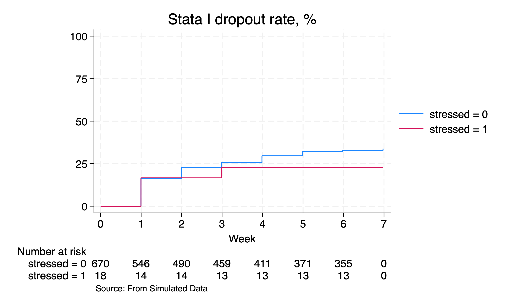

8.Survival Analysis: Non-parametric, Semi-parametric, Parametric#
Show code cell source
// Comments and Indentation by GPT-4o
// Load the dataset based on the operating system
if c(os) == "MacOSX" {
use wk7output/student_pressure, clear
}
else {
use wk7output\student_pressure, clear
}
// Set the seed for reproducibility
set seed 340600
// Generate a withdrawal variable with a 10% probability
g withdraw = rbinomial(1, .1)
// Sort the dataset by student_id and session_date
sort student_id session_date
// List records for student_ids 2 to 5
list if inrange(student_id, 2, 5)
// Generate a withdrawal date variable
g withdraw_dt = session_date if withdraw==1
// Summarize session_date
sum session_date
// Format withdraw_dt as a date
format withdraw_dt %td
// List records for student_ids 2 to 5
list if inrange(student_id, 2, 5)
// Generate an end date as the minimum withdrawal date by student_id
by student_id: egen end = min(withdraw_dt)
// Format end date
format end %td
// List records for student_ids 2 to 5
list if inrange(student_id, 2, 5)
// Tabulate the end date with missing values
tab end, mi
// Summarize session_date
sum session_date
// List records for student_ids 2 to 5
list if inrange(student_id, 2, 5)
// Replace missing end dates with the maximum date
replace end=r(max) if missing(end)
// Tabulate the end date with missing values
tab end, mi
// Generate a begin date as the minimum session date by student_id
by student_id: egen begin = min(session_date)
// Format begin date
format begin %td
// List records for student_ids 2 to 5
list if inrange(student_id, 2, 5)
// Ensure withdrawal continuity by replacing the next record's withdrawal status
by student_id: replace withdraw = 1 if withdraw[_n-1]==1
// List records for student_ids 2 to 5
list if inrange(student_id, 2, 5)
/* --- insertion ---*/
// Generate ineligibility indicator
bys student_id: egen inelig=min(withdraw)
// List ineligible students
l if inelig==1
// Drop ineligible students
drop if inelig==1
// Show the codebook for student_id
codebook student_id
// Keep selected variables
keep student_id session sbp withdraw end begin
// Order the variables
order student_id session begin end withdraw sbp
/* --- continue ---*/
// Set the survival time settings
stset end, fail(withdraw) enter(begin) origin(begin) scale(7.0242308)
// Generate a stressed variable based on systolic blood pressure
g stressed = sbp>140
#delimit ;
// Plot survival curves
sts graph,
fail per(100)
ylab(,format(%2.0f))
by(stressed)
tmax(7)
xlab(0(1)7)
xti("Week")
ti("Stata I dropout rate, %")
/*
legend(
order(1 2)
lab(1 "SBP>140mmHg")
lab(2 "SBP<140mmHg")
ring(0)
pos(11)
)
*/
risktable
note("Source: From Simulated Data",
pos(7)
)
;
#delimit cr
// Export the graph based on the operating system
if c(os) == "MacOSX" {
graph export wk7output/class_attrition_wk8.png, replace
}
else {
graph export wk7output\class_attrition_wk8.png, replace
}
// Calculate absolute risks
sts list, fail by(stressed) at(2 4 6) saving(km, replace )
preserve
use km, clear
replace failure=failure*100
// Calculate mean failure rates at different time points for non-stressed students
sum failure if stressed==0 & time==2
local wk2: di %3.2f r(mean)
sum failure if stressed==0 & time==4
local wk4: di %3.2f r(mean)
sum failure if stressed==0 & time==6
local wk6: di %3.2f r(mean)
// Calculate mean failure rates at different time points for stressed students
sum failure if stressed==1 & time==2
local swk2: di %3.2f r(mean)
sum failure if stressed==1 & time==4
local swk4: di %3.2f r(mean)
sum failure if stressed==1 & time==6
local swk6: di %3.2f r(mean)
restore
// Perform log-rank test for nonparametric hypothesis testing
sts test stressed, logrank
// Capture the chi-squared value and degrees of freedom
local chi2_value = r(chi2)
local df = r(df)
// Calculate the p-value
local p = chi2tail(`df', `chi2_value')
di `p'
qui {
if `p' < 0.01 {
local p: di "p < 0.01"
}
else if inrange(`p',0.01,0.05) {
local p: di %3.2f `p'
}
else {
local p: di %2.1f `p'
}
if `p' < .05 {
noi di "Withdraw rates for Stata I at weeks 2, 4 and 6 were `wk2'%, `wk4'%, `wk6'% for students with SBP<140mmHg "
noi di "For students with SBP>140mmHg, the rates were `swk2'%, `swk4'%, `swk6'%"
noi di "There's an association between SBP>140mmHg and withdrawal from Stata I: p=`p'"
}
else {
noi di "Withdraw rates for Stata I at weeks 2, 4 and 6 were `wk2'%, `wk4'%, `wk6'% for students with SBP<140mmHg "
noi di "For students with SBP>140mmHg, the rates were `swk2'%, `swk4'%, `swk6'%"
noi di "There's no association between SBP>140mmHg and withdrawal from Stata I: p=`p'"
}
}
// List the first record
list in 1
// Check if the data is nested
capture isid student_id
if _rc !=0 {
di "These data are nested and each student has several records"
}
else {
di "There's only a single record per student"
}
// Perform Cox regression analysis
stcox stressed
// List results
ereturn list
return list
// Store the results matrix
matrix m = r(table)
matrix list m
// Perform linear combination of coefficients
lincom stressed
return list
qui {
local p = r(p)
local hr : di %3.2f exp(r(estimate))
local lb : di %3.2f exp(r(lb))
local ub : di %3.2f exp(r(ub))
if r(p) < 0.01 {
local p: di "p < 0.01"
}
else if inrange(r(p),0.01,0.05) {
local p: di %3.2f r(p)
}
else {
local p: di %2.1f r(p)
}
if `p' < .05 {
noi di "There's an association between SBP>140mmHg and withrawal from Stata I: HR=`hr', 95%CI: `lb'-`ub', p=`p'"
}
else {
noi di "There's no association between SBP>140mmHg and withrawal from Stata I: HR=`hr', 95%CI: `lb'-`ub', p=`p'"
}
}
// Generate a representation tag for each student
egen representation = tag(student_id)
// List the first 10 records
l in 1/10
// Keep only unique records for each student
keep if representation==1
// Count the number of unique records
count
// Check if the data is nested
capture isid student_id
if _rc !=0 {
di "These data are nested and each student has several records"
}
else {
di "There's only a single record per student"
}
Show code cell output
file wk7output\student_pressure.dta not found
r(601);
r(601);
r(601);

8.1 Nonparametric#
GPT-4o annotation:#
This Stata script analyzes student data for dropout rates and survival analysis, including nonparametric hypothesis testing. Here’s a breakdown of each part of the script:
Loading Data Based on OS:
The script first checks the operating system (OS) and loads the appropriate dataset:
if c(os) == "MacOSX" { use wk7output/student_pressure, clear } else { use wk7output\student_pressure, clear }
Setting Seed and Creating Withdrawal Variable:
Sets a seed for reproducibility and creates a binary variable
withdrawto indicate whether a student withdraws:set seed 340600 g withdraw = rbinomial(1, .1)
Sorting and Listing Data:
Sorts the data by
student_idandsession_dateand lists a subset of the data:sort student_id session_date list if inrange(student_id, 2, 5)
Generating Withdrawal Date and Summary Statistics:
Creates a variable
withdraw_dtto record the session date if the student withdraws and provides summary statistics:g withdraw_dt = session_date if withdraw==1 sum session_date
Formatting and Listing Data:
Formats the
withdraw_dtvariable and lists the data again:format withdraw_dt %td list if inrange(student_id, 2, 5)
Generating and Formatting End Date:
Creates an
endvariable to record the earliest withdrawal date for each student and formats it:by student_id: egen end = min(withdraw_dt) format end %td list if inrange(student_id, 2, 5)
Handling Missing End Dates:
Replaces missing
enddates with the maximum session date and tabulates theendvariable:replace end=r(max) if missing(end) tab end, mi
Generating and Formatting Begin Date:
Creates a
beginvariable for the earliest session date for each student and formats it:by student_id: egen begin = min(session_date) format begin %td list if inrange(student_id, 2, 5)
Ensuring Sequential Withdrawals:
Ensures that once a student withdraws, they are marked as withdrawn in subsequent records:
by student_id: replace withdraw = 1 if withdraw[_n-1]==1 list if inrange(student_id, 2, 5)
Marking and Dropping Ineligible Students:
Marks ineligible students (those who withdraw) and drops them from the dataset:
bys student_id: egen inelig=min(withdraw) l if inelig==1 drop if inelig==1
Preparing for Survival Analysis:
Keeps relevant variables and orders them, then sets up the survival data structure:
codebook student_id keep student_id session sbp withdraw end begin order student_id session begin end withdraw sbp stset end, fail(withdraw) enter(begin) origin(begin) scale(7.0242308)
Creating a Stress Indicator:
Creates a
stressedvariable indicating high systolic blood pressure (SBP):g stressed = sbp>140
Generating Survival Graph:
Generates a survival graph with failure percentages, stratified by the
stressedvariable, and exports the graph as a PNG file:#delimit ; sts graph, fail per(100) ylab(,format(%2.0f)) by(stressed) tmax(7) xlab(0(1)7) xti("Week") ti("Stata I dropout rate, %") /* legend( order(1 2) lab(1 "SBP>140mmHg") lab(2 "SBP<140mmHg") ring(0) pos(11) ) */ risktable note("Source: From Simulated Data", pos(7) ) ; #delimit cr graph export wk7output/class_attrition_wk8.png, replace sts test
Checking Data Structure:
Checks if the data is nested by student and displays a message accordingly:
list in 1 capture isid student_id if _rc !=0 { di "These data are nested and each student has several records" } else { di "There's only a single record per student" }
Calculating Absolute Risks:
Calculates absolute risks at specific time points for stressed and non-stressed students:
sts list, ...
Performing Hypothesis Testing:
Performs a log-rank test for nonparametric hypothesis testing:
sts test stressed, logrank
Calculating p-value and Displaying Results:
Calculates the p-value and displays results based on significance level:
local p = chi2tail(`df', `chi2_value') if `p' < .05 { ... }
Checking Data Structure:
Checks if the data is nested by student and displays a message accordingly:
capture isid student_id if _rc !=0 { di "These data are nested and each student has several records" } else { di "There's only a single record per student" }
This Stata script demonstrates a thorough analysis process for examining dropout rates and survival in a student population, including data preparation, hypothesis testing, and regression analysis.
8.2 Semiparametric#
GPT-4o annotation:#
This Stata script performs a Cox proportional hazards regression, extracts results, and formats the output. Here’s an annotated breakdown of the script:
Cox Proportional Hazards Model:
The script fits a Cox model with
stressedas the predictor:stcox stressed
Listing Stored Results:
Lists estimation results and other stored results:
//creturn list ereturn list return list
Storing Results in a Matrix:
Stores the results of the Cox model in a matrix
mand lists the matrix:matrix m = r(table) matrix list m
Linear Combination of Estimates:
Calculates a linear combination of the
stressedcoefficient:lincom stressed return list
Extracting and Formatting Results:
Quietly extracts the p-value, hazard ratio (HR), and its 95% confidence interval (CI), formats them, and prints a message based on the significance of the association:
qui { local p = r(p) local hr : di %3.2f exp(r(estimate)) local lb : di %3.2f exp(r(lb)) local ub : di %3.2f exp(r(ub)) if r(p) < 0.01 { local p: di "p < 0.01" } else if inrange(r(p),0.01,0.05) { local p: di %3.2f r(p) } else { local p: di %2.1f r(p) } if `p' < .05 { noi di "There's an association between SBP>140mmHg and withdrawal from Stata I: HR=`hr', 95%CI: `lb'-`ub', p=`p'" } else { noi di "There's no association between SBP>140mmHg and withdrawal from Stata I: HR=`hr', 95%CI: `lb'-`ub', p=`p'" } }
Explanation of Key Components:#
Fitting the Cox Model:
stcox stressedfits a Cox proportional hazards model with the variablestressed(indicating SBP > 140 mmHg) as the predictor.
Listing Results:
ereturn listandreturn listdisplay the estimation results and stored results from the last estimation command.
Extracting Results into a Matrix:
matrix m = r(table)stores the results of the Cox model in a matrix namedm, which is then listed usingmatrix list m.
Calculating Linear Combinations:
lincom stressedcalculates the linear combination of estimates for thestressedvariable, withreturn listlisting the results.
Quiet Block for Extracting and Formatting:
qui(quietly) suppresses output while extracting and formatting results.The
localcommands assign results (p-value, HR, lower and upper bounds of the 95% CI) to local macros.The
di(display) command formats these values.The script checks the significance of the p-value and prints a message indicating whether there is a statistically significant association between high SBP and withdrawal from the Stata I class.
This script is comprehensive for fitting a Cox model, extracting results, and providing a clear interpretation based on statistical significance.
8.3 Parametric#
GPT-4o annotation:#
This Stata script uses a parametric survival regression model to analyze the relationship between high systolic blood pressure (SBP > 140 mmHg) and student withdrawal from a class. The script then extracts, formats, and interprets the results. Here’s an annotated breakdown:
Fitting a Parametric Survival Regression Model:
The script fits a parametric survival regression model with
stressedas the predictor:streg stressed
Linear Combination of Estimates:
Calculates a linear combination of the
stressedcoefficient:lincom stressed
Listing Stored Results:
Lists the stored results from the linear combination:
return list
Extracting and Formatting Results:
Quietly extracts the p-value, hazard ratio (HR), and its 95% confidence interval (CI), formats them, and prints a message based on the significance of the association:
qui { local p = r(p) local hr : di %3.2f exp(r(estimate)) local lb : di %3.2f exp(r(lb)) local ub : di %3.2f exp(r(ub)) if r(p) < 0.01 { local p: di "p < 0.01" } else if inrange(r(p),0.01,0.05) { local p: di %3.2f r(p) } else { local p: di %2.1f r(p) } if `p' < .05 { noi di "There's an association between SBP>140mmHg and withdrawal from Stata I: HR=`hr', 95%CI: `lb'-`ub', p=`p'" } else { noi di "There's no association between SBP>140mmHg and withdrawal from Stata I: HR=`hr', 95%CI: `lb'-`ub', p=`p'" } }
Explanation of Key Components:#
Fitting the Model:
streg stressedfits a parametric survival regression model using thestressedvariable (indicating SBP > 140 mmHg) as the predictor.
Calculating Linear Combinations:
lincom stressedcalculates the linear combination of estimates for thestressedvariable, withreturn listlisting the results.
Quiet Block for Extracting and Formatting:
qui(quietly) suppresses output while extracting and formatting results.The
localcommands assign results (p-value, HR, lower and upper bounds of the 95% CI) to local macros.The
di(display) command formats these values.The script checks the significance of the p-value and prints a message indicating whether there is a statistically significant association between high SBP and withdrawal from the Stata I class.
Script Flow Summary:#
Model Fitting:
Fit the parametric survival model with
stressedas the predictor.
Linear Combination and Results Extraction:
Compute the linear combination of the predictor, list the results, and store relevant statistics in local macros.
Formatting and Displaying Results:
Format the HR and CI values.
Determine the significance of the p-value and display an appropriate message indicating the presence or absence of a significant association between high SBP and class withdrawal.
This script effectively combines parametric survival regression with robust result extraction and interpretation, providing clear and informative output.